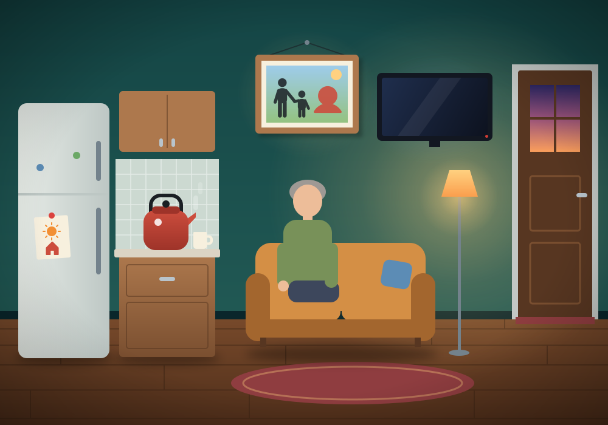

Familiar places
Familiar places
Ask: “Please call my wife.”
Call my wife
The word “wife” will not come to Yuriy. The family photo offers it.
Now press when “My wife” lights up.
EN
УКР

To the ward
УКР
Ukrainian
Your message appears here
Speak
Delete last
Clear